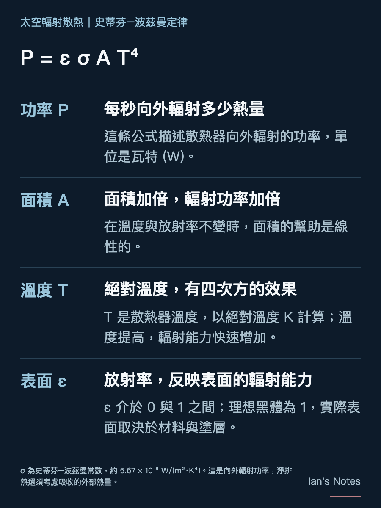
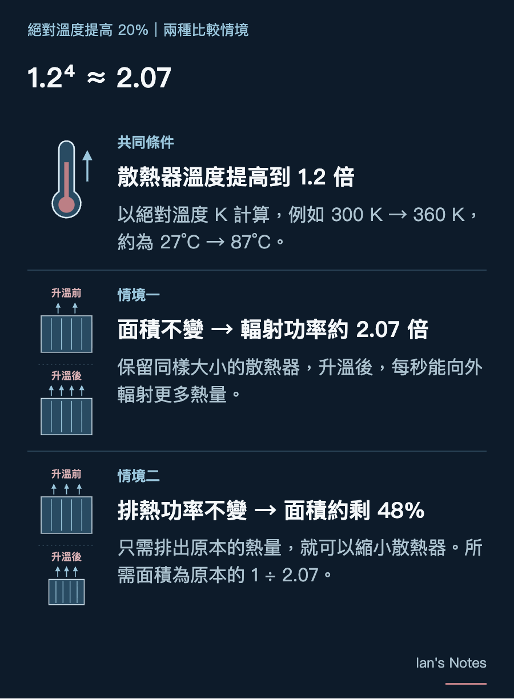

Elon Musk 在訪談中提到，如果把以絕對溫度 K 計算的工作溫度提高 20%，散熱器重量大約可以減半。為什麼太空晶片在更高溫度下運作，反而有利於散熱？這要從太空排熱的方式說起。

在地面，伺服器可以用空氣或冷卻液把熱帶走，再由機房的排熱設備將熱排到室外，例如利用空氣對流，或冷卻塔中的水蒸發。只要晶片仍能被充分冷卻，提高冷卻液的容許溫度，也有機會減少冰水機(chiller)的使用。
太空外部是真空，沒有周圍空氣幫忙帶走熱量。雖然也能採用消耗水的相變散熱，例如太空衣的昇華器，但需要持續補充水。因此，長期運作的太空資料中心，主要仍須靠散熱器，以熱輻射把熱排向外界。
溫度提高 20%，為什麼面積能接近減半？
依據史蒂芬–波茲曼定律（灰體輻射），散熱器向外輻射的功率為：
Pₑₘᵢₜ = ε σ A Tᵣₐ𝒹⁴
A 是散熱面積，ε 是表面放射率，σ 是史蒂芬–波茲曼常數，Tᵣₐ𝒹 則是以絕對溫度 K 計算的散熱器溫度。實際淨排熱能力，仍會受到吸收的太陽、地球及其他外部熱量影響。
面積有線性的幫助，溫度則有四次方的效果。散熱器的絕對溫度若提高 20%，每單位面積向外輻射的功率便增加到：
1.2⁴ ≈ 2.07 倍
在放射率不變、吸收的外部熱量可忽略的簡化條件下，排出相同熱量所需的面積，就能降至原本的約 48%。這裡必須以絕對溫度 K 計算，例如從 300 K 提高到 360 K，相當於從約 27°C 提高到 87°C。
Musk 的說法有物理依據。但從面積約減半走到重量約減半，還需要假設散熱器每單位面積的重量相近；管路、支撐與部署機構，也未必會同比例縮小。
這裡提高的是散熱器的溫度；晶片能承受較高溫度，還要能讓散熱器也提高工作溫度，才能換取減重的好處。


太空溫差極大，考驗散熱系統
太空設備可能反覆進出日照與地球陰影。以國際太空站為例，外部日照與黑暗條件的溫度可分別達到約＋121°C 與 −157°C。再加上晶片運算負載改變所帶來的發熱變化，設備的冷熱差異可能進一步加大。溫控系統必須緩和這些變化，避免外部的極端冷熱直接成為晶片承受的溫度。
問題在於，連在一起的材料，受熱後不一定膨脹得一樣多。金屬、晶片、焊接材料與密封件，各有不同的膨脹幅度。當它們固定在一起，一邊想多伸長一點，另一邊卻只伸長一點，接合處就會受到拉扯；降溫時，又再收縮回去。一次可能沒事，但反覆發生，便可能累積疲勞、形成裂紋。JPL 對太空電子封裝的研究，就把這種差異膨脹造成的疲勞，列為焊點失效的重要原因。
而且，不一定要整件設備一起變熱、變冷，才會產生應力。同一時間，一端很熱、另一端很冷，也會讓不同部位產生不同程度的變形。太空真空中沒有周圍空氣協助均溫，發熱的電子板與朝向深空的冷端，可能維持較大的溫度差，造成熱變形與應力。
這種反覆拉扯，也可能放大原本就存在的弱點。國際太空站的一次冷卻液洩漏調查，就把問題鎖定在快速接頭的密封處：密封缺陷與下方鍍層剝離，被列為最可能原因，而在軌熱循環進一步加劇了剝離。因此，散熱系統除了當下不能漏，還要確認接頭與密封在長期冷熱變化後，仍能維持完整。
如果溫度進一步降到冷卻液的凝固點以下，還會多一個凍融問題。對銅水熱管而言，水結冰膨脹，可能損壞管壁或內部毛細結構。
但結冰不代表一定會壞，關鍵是結構能否承受凍融。
提高工作溫度，可以讓太空排熱更有效率；但系統仍須承受運作、停機與環境變化。晶片耐熱、散熱器減重，以及接合與密封的長期可靠性，必須一起考慮，才能把高溫排熱的物理優勢，變成實際可用的太空散熱系統。